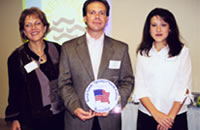

About Us
As you can see from these pages we are blessed to be serving one of the strongest and most vigorous Keep America Beautiful communities in the nation.
Because the nature of community service draws people willing to give so generously of their time and talent, when volunteering and participating in organizations like KSSNFB you will work with some of the most wonderful people you will ever meet in life performing at their best. Please consider joining us and all the generous volunteers in making Sandy Springs and North Fulton one of the cleanest, most beautiful places to live or visit in this great nation.
History
1982 -- Sandy Springs Clean & Beautiful Joins With Keep America Beautiful.
In March of 1982, Sandy Springs Clean and Beautiful was certified as an affiliate of Keep America Beautiful, a national non-profit public education organization dedicated to preserving the natural beauty and environment of America, and improving waste handling practices at the community level.
1990 -- the organization entered into a public/private partnership with Fulton County and the A.G. Spanos Development Corporation. With $125,000 from the county, donations and in-kind services from area Businesses, AG Spanos and organization volunteers were successful in building a Recycling Collection Drop-Off Center.
Today -- Keep Sandy Springs North Fulton Beautiful is comprised of volunteer citizens, actively employed people, young and old, students and retirees form all walks of life with one common thread that brings them together -- the desire to improve and protect the environment in which they live and work.